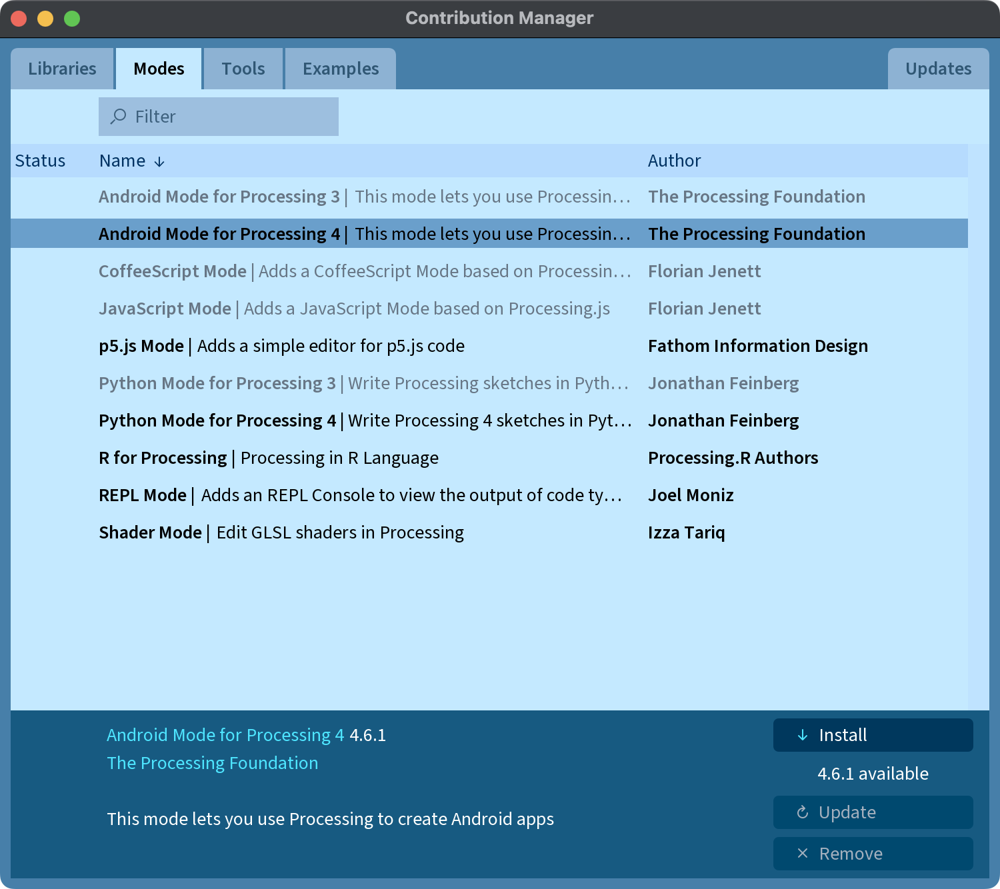

The Android Mode
The main component of Processing for Android is the Android mode, a programming mode for the Processing Development Environment (PDE) that adds all the options needed to run Processing sketches on Android devices and also in the emulator.
You could also use only the Android core library to develop Android apps with the IDE of your choice, see this tutorial for more details.
Quick install
Open a Processing editor window then click the link below:
This will install the latest version of the Android mode.
Contributions Manager
The latest stable release of the Android mode can be installed through the Contribution Manager (CM) in the PDE. To open the CM, click the arrow in the mode selector in the menu bar, and choose "Add Mode...":

Once the CM window shows up, select the Android Mode from the list, and then click the install button in the bottom of the window:

After installing the mode, you will be able to switch into it using the mode selector in the menu bar. Follow the Getting Started tutorial for the first steps with the Android mode.
Changelog
The 4.6 release: project structure and SDK improvements
Version 4.6 introduces key updates to the Android mode, including a reorganization of the project structure to facilitate debugging and development
The 4.5 release: Processing 4.0!
Version 4.5 brings several enhancements to the Android mode, with a focus on compatibility with Processing 4.0.
The 4.1 release: integrated debugger and Augmented Reality
Version 4.1 introduces two significant additions to Processing for Android: an integrated debugger, just like the one available in the Java mode, and a new AR library based on ARCore.
The 4.0 release: wallpapers, watch faces, and Realidad Virtual
Version 4.0 brings several improvements to the Android mode, incuding new functionality for creating live wallpapers, watch faces, and VR apps. You will find more on how to use this functionality in the tutorials and the reference pages of this site.
Pre-releases
Pre-release versions, as well as older stable releases, are are not available in the CM, and need to be installed manually. In order to do this, first download the AndroidMode-xyz.zip file for the desired release or pre-release from the releases section in the GitHub repo of the Android Mode. Uncompress the zip file and then move the AndroidMode folder into the modes folder inside inside the sketchbook folder.